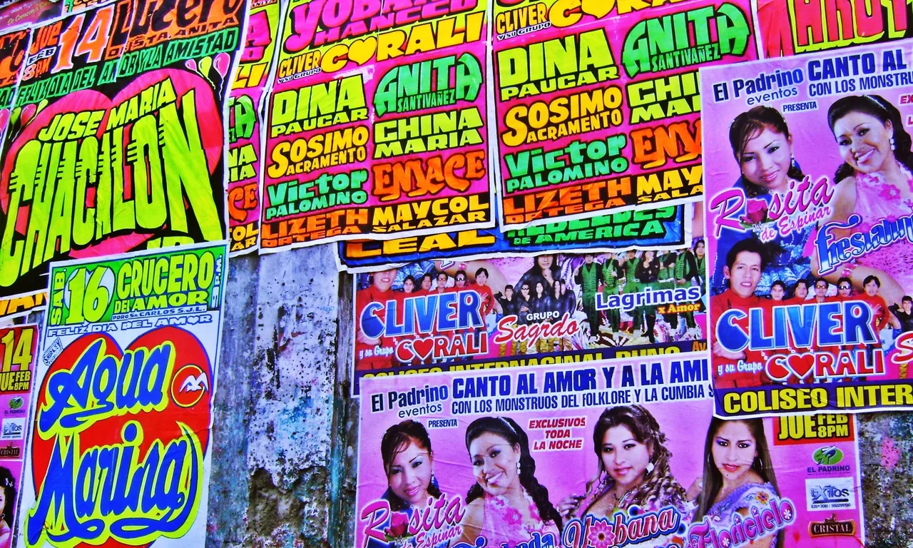
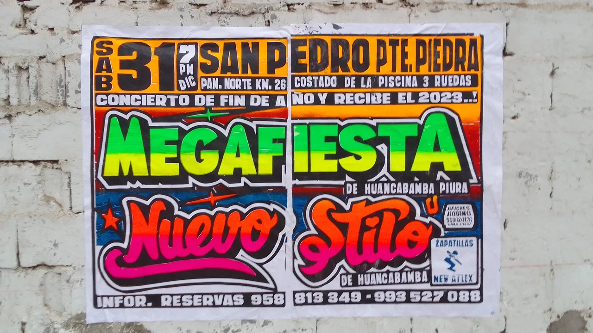

Sobre la bruma perpetua y las paredes de adobe y concreto de Lima, la migración andina imprimió un alfabeto de tintas fosforescentes que no pide permiso para existir. Una indagación sobre el cartel chicha, la serigrafía en serie y la desobediencia tipográfica popular.
Hay en Lima una luz particular que los limeños llaman cielo panza de burro, una bóveda continua de nubes bajas y blancuzcas que durante ocho o nueve meses al año priva a la ciudad de sombras nítidas y condena a sus habitantes a una penumbra plateada, húmeda y fría que no llega a ser lluvia pero cala hasta los huesos. Sobre esa grisura mineral —donde el concreto sin pintar de las barriadas se confunde con el polvo del desierto costero y las paredes de adobe descascarado de las viejas casonas coloniales parecen disolverse en el invierno— apareció un día, sin pedirle permiso al municipio ni a las buenas conciencias letradas, una llamarada de fósforo que cambió para siempre el régimen visual de la capital peruana. No era una pintura mural encargada por el Estado para celebrar a los héroes de la patria, ni una valla publicitaria de aerolíneas o perfumes suizos colocada en lo alto de un edificio señorial de Miraflores o San Isidro: era una hoja humilde de papel periódico barato, impresa a mano con mallas de seda en talleres clandestinos de barrio, que gritaba en amarillo limón, fucsia encendido y naranja flúor que esa misma noche, en un canchón polvoriento de la carretera central, una orquesta de provincia pondría a bailar a diez mil almas al ritmo de una guitarra eléctrica que imitaba el llanto de un violín andino.

Los llaman carteles chicha, y quien los mire con ojos habituados a la pulcritud higiénica de las escuelas europeas de diseño sentirá un rechazo casi visceral, ese sobresalto defensivo que el burgués experimenta siempre ante lo que no cabe en sus casilleros de proporción y mesura. Hay en estas hojas una saturación desesperada, un horror al vacío que no deja un solo centímetro sin ocupar: las letras crecen como troncos retorcidos, se ensanchan, disparan sombras en tres dimensiones hacia abajo y hacia los lados, se montan unas sobre otras como los pasajeros de un microbús a las siete de la tarde y parecen disputarse el aire a empellones para que ningún nombre de conjunto musical quede subordinado al vecino. Chacalón y la Nueva Crema, Los Shapis, Centella, Pascualillo y su Estrella Dorada: nombres que la Lima aristocrática fingía no oír, pero que resonaban en los cerros de San Juan de Lurigancho, en los arenales de Villa El Salvador y en los callejones populosos de El Agustino con una potencia que ninguna sinfonía de academia ha podido jamás igualar.
Para entender el origen de esta llamarada tipográfica hay que regresar a los años setenta y ochenta del siglo veinte, cuando el Perú rural se quebró definitivamente y cientos de miles de campesinos quechua y aymara, expulsados por la sequía, el abandono secular del Estado oligárquico y más tarde por la violencia demencial de la guerra interna, bajaron de las cordilleras hacia la franja desértica de la costa. Llegaban con lo puesto, con atados de mantas al hombro y los ojos cargados de miedo y asombro ante una ciudad que los recibía con desprecio racial, llamándolos serranos, cholos y alzados, confinándolos a invadir los cerros pedregosos donde no había agua potable, luz eléctrica ni calles transitables. Aquel fenómeno inmenso, que el antropólogo José Matos Mar bautizó certeramente como el desborde popular, no fue únicamente una invasión demográfica o una crisis urbanística: fue la refundación callada, dolorosa y tenaz de un país que durante cuatrocientos años había pretendido vivir de espaldas a su propia sangre.
Y sin embargo, aquellos hombres y mujeres que levantaban esteras sobre la arena y mezclaban barro para hacer adobes los fines de semana no se limitaron a sobrevivir en silencio. Traían consigo su música, sus santos patrones, sus fiestas patronales y sobre todo esa necesidad humana irreductible de encontrarse en la noche para conjurar la soledad y el desarraigo. Pero en la costa la vieja música de arpa y quena resultaba insuficiente para narrar la violencia de la urbe moderna. Fue allí donde ocurrió el milagro acústico de la chicha: los hijos de los migrantes tomaron la guitarra eléctrica Fender, los timbales tropicales y el bajo reverberante traídos del Caribe, y los cruzaron con las melodías pentatónicas de los huaynos de Junín y Ayacucho. La chicha era el sonido del migrante que camina entre el smog y el asfalto pero sueña con los campos de trigo de la sierra; una música híbrida, desgarrada y festiva, que necesitaba con urgencia una piel visual para anunciarse en las esquinas.
El patriarca indiscutido de esta invención gráfica tiene nombre y apellido: Pedro Rojas Meza, a quien todo el mundo conoce en el circuito popular como Monky. Nacido en Viques, un pequeño pueblo del valle del Mantaro en el departamento de Junín, Monky se crió entre artesanos que bordaban chalecos festivos con hilos dorados y pintaban carros alegóricos para las fiestas patronales. Cuando llegó a Lima siendo un muchacho tímido, descubrió que imprimir carteles en las imprentas tipográficas tradicionales de offset costaba una fortuna que ningún promotor de bailes populares podía pagar, y además aquellas máquinas lentas exigían tipografías de plomo con tamaños ridículamente pequeños, incapaces de ser leídos a cincuenta metros de distancia desde la ventanilla de un autobús en marcha. Monky comprendió que la solución estaba en sus propias manos, en el oficio milenario del estarcido y la serigrafía casera.
En un patio de tierra de un barrio periférico, con maderas sobrantes de cajones de fruta, Monky armó sus primeros bastidores de serigrafía. En lugar de sedas suizas costosas, tensó telas sintéticas de baja densidad compradas por metros en el mercado de Gamarra; recortó a mano alzada las plantillas de papel kraft usando cuchillas de zapatero bien afiladas, y empezó a mezclar las tintas. Pero las tintas corrientes de esmalte y óleo se apagaban de inmediato sobre la superficie porosa y grisácea del papel periódico. La luz cenicienta de Lima devoraba los rojos y los azules oscuros, convirtiéndolos en manchas lúgubres antes de que cayera la tarde. Fue entonces cuando Monky tuvo la audacia de experimentar con los pigmentos fosforescentes de origen industrial, aquellos polvos minerales recién importados que se usaban para señales viales de peligro y chalecos de mineros nocturnos.
Aquello fue una epifanía óptica. Las tintas flúor poseen una propiedad física singular llamada luminiscencia: no se limitan a reflejar la luz ambiental como los colores convencionales, sino que absorben la radiación ultravioleta invisible que atraviesa la densa capa de nubes de Lima y la reemiten instantáneamente en longitudes de onda del espectro visible. En términos prácticos y cotidianos, esto significa que el cartel chicha no espera pasivamente que la luz del sol lo alumbre: el cartel chicha produce su propia luminosidad, parece encenderse por dentro y vibra con una intensidad fosforescente que perfora la bruma marina con la fuerza de un relámpago contenido. El amarillo limón, el verde radioactivo, el naranja volcánico y el fucsia penetrante no eran una ocurrencia frívola ni una vulgaridad de feria: eran las únicas frecuencias cromáticas capaces de sobrevivir en la atmósfera plomiza de la capital.
Hay además en esa paleta un lazo de sangre indestructible con la memoria textil de los Andes. Quien haya visitado las ferias dominicales de Huancayo o las fiestas de la Virgen de la Candelaria en Puno sabrá que los trajes de luces de las danzas tradicionales jamás han conocido los tonos pasteles ni las sutilezas desvaídas que las clases letradas suelen asociar con la elegancia. Las polleras de bayeta bordadas a máquina brillan con lanas teñidas en anilinas furiosas, los faldones superpuestos crean contrastes violentos de verde y magenta, y las lentejuelas metálicas capturan cada rayo de sol sobre el altiplano. Lo que Monky y sus seguidores hicieron en los talleres serigráficos de Lima fue trasladar esa memoria cromática de la lana a la tinta, del telar campesino al muro metropolitano, recordándole a la urbe blanqueada que sus nuevos habitantes no habían venido a esconderse en los rincones sino a teñir la ciudad con los fuegos de su propia fiesta.
Pero si el color es el grito que despierta la mirada, la tipografía es el cuerpo sólido que sostiene el mensaje. La letra chicha no desciende de la tipografía romana de Bodoni ni de la frialdad geométrica de la tipografía suiza de entreguerras; su linaje proviene del letrerismo popular de los mercados de abasto, de los pintores de brocha gorda que rotulan los nombres de las frutas en cartulinas de carnicería y de las sombras pintadas a mano en las carrocerías de los camiones de carga que bajan papas y choclos desde la sierra central. Es una tipografía barroca, elástica y muscular, dibujada directamente sobre la película con pinceles gastados o cortada al vuelo con bisturí sobre papel encerado, donde el trazo no responde a un módulo modular abstracto sino al pulso respiratorio del artesano.

Observemos con detenimiento una sola palabra en un cartel chicha bien estampado: las astas de las consonantes son anchas y generosas, casi bulbosas, como si estuvieran hinchadas de savia vegetal; los remates no son delgadas líneas perpendiculares sino cuñas puntiagudas que recuerdan las garras de un puma o las espinas de una tuna; y la base de la palabra jamás descansa en una línea horizontal plana, sino que se curva hacia arriba en un arco tenso, como la cuerda de un arco a punto de disparar una flecha hacia el cielo. Luego viene la estratagema del volumen: para que la letra no parezca aplastada contra el papel, el rotulista proyecta una sombra profunda hacia abajo, pintada en azul marino o en negro absoluto, y sobre esa sombra arroja un filete blanco o amarillo pálido que despega el texto de la superficie y lo convierte en una escultura tridimensional que parece saltar del muro hacia el pecho del transeúnte.
La producción de estos afiches es en sí misma una coreografía de resistencia material y trabajo colectivo que desmiente el mito burgués del diseñador solitario frente a la pantalla de una computadora. En los talleres de Puente Piedra, Breña o El Agustino no hay teclados ni programas de maquetación digital: hay mesas largas de madera contrachapada sobre las que se extienden decenas de pliegos de papel periódico cortados a escuadra. Dos operarios trabajan en perfecta sincronía: uno vierte la pasta de tinta fosforescente —preparada con aglutinantes vinílicos y solventes de olor penetrante— sobre el extremo de la malla; el otro empuña con ambas manos una racleta de madera con goma de caucho vulcanizado y la arrastra en un solo movimiento firme y parejo, de arriba abajo, forzando a la tinta a pasar a través de los poros abiertos del tejido.
En cuestión de tres segundos, una hoja en blanco queda impregnada de una palabra gigante en amarillo fósforo. Se levanta el bastidor, se retira la hoja húmeda con pinzas de madera y se cuelga en alambres que atraviesan el taller de pared a pared, como si fuera ropa recién lavada secándose al viento. Luego entra el segundo bastidor con el fucsia, luego el tercero con el verde esmeralda y finalmente el cuarto con la tinta negra que encierra las formas, define los contrastes y asienta las fechas, los locales y las advertencias de rigor: seguridad garantizada, cerveza al polo, local cerrado con carpas. Se imprimen mil, dos mil, cinco mil carteles en una sola jornada maratónica, al compás de una radio que transmite cumbia a todo volumen y bajo bombillas peladas que cuelgan del techo rodeadas de polillas.
Pero la vida del cartel no comienza en el taller: comienza en la noche, cuando la ciudad duerme y las avenidas quedan en manos de las brigadas de pegadores. Es una cuadrilla de dos o tres hombres armados con escobas viejas, baldes de hojalata llenos de engrudo caliente cocinado a base de harina de trigo, agua y sulfato de cobre para evitar que los gusanos se coman el almidón, y fajos inmensos de afiches doblados sobre los hombros. Suben a mototaxis o camionetas desvencijadas y recorren a toda velocidad las avenidas Túpac Amaru, Universitaria o Nicolás Ayllón. La operación es fulminante: un hombre unta la pared con la escoba empapada de engrudo en dos pasadas circulares; el segundo adhiere el papel con las palmas de las manos extendidas; una tercera pasada de engrudo sella la superficie por fuera para protegerla del sereno y del viento, y la cuadrilla corre al siguiente poste antes de que aparezca una patrulla del serenazgo municipal para multarlos o decomisarles el material.
Allí, en los muros ciegos de las fábricas abandonadas, en las barandas de los puentes peatonales de concreto y en las tapias de los terrenos baldíos, se libra una batalla feroz por la visibilidad que ningún museo de arte contemporáneo ha podido reproducir. La pared limeña es un palimpsesto perpetuo, un estrato geológico de celulosa y almidón donde cada afiche tiene una esperanza de vida que rara vez supera las cuarenta y ocho horas. Al día siguiente de una pegada, la cuadrilla de un grupo rival tapará la mitad de los carteles con un festival folclórico o una fiesta de aniversario; dos noches después, una campaña política intentará cubrirlo todo con rostros sonrientes de candidatos que nadie recuerda; y a la semana siguiente, los pegadores chicha volverán a la carga, superponiendo capa sobre capa hasta formar un colchón esponjoso de papel endurecido que a veces alcanza varios centímetros de grosor.
Durante décadas, la intelectualidad letrada y los colegios profesionales de arquitectos y diseñadores de Lima trataron a esta gráfica con un desprecio teñido de pavor higienista. Hablaban de contaminación visual, de agresión al paisaje urbano, de ordinariez chola que afeaba la sobriedad señorial de la capital virreinal. Aquellos señores distinguidos, educados en la adoración reverente de los carteles modernistas de Zúrich o de las tipografías despojadas de Ulm, no alcanzaban a comprender que la asepsia gráfica de las naciones ricas es el privilegio de sociedades donde los servicios básicos están resueltos y donde el espacio público ha sido domesticado por el consumo institucional. En una ciudad fragmentada, donde más de la mitad de la población sobrevive en la informalidad económica y donde el Estado solo aparece bajo la forma del policía que reprime o del recaudador que clausura, el cartel chicha no es basura visual: es el diario mural del pueblo, el telégrafo comunal que avisa dónde se reunirá la tribu para celebrar que sigue viva a pesar de todo.
La paradoja final —esa ironía que la historia reserva siempre para las expresiones nacidas de la necesidad popular— ocurrió cuando los publicistas de las grandes marcas transnacionales y los comisarios de bienales de arte descubrieron que el cartel chicha tenía más fuerza comunicativa que todas sus campañas millonarias de mercadeo juntas. A partir de los años dos mil, las tipografías fluorescentes empezaron a ser imitadas en anuncios de telefonía móvil, marcas de cerveza industrial y portadas de libros académicos; galerías de Europa y Estados Unidos invitaron a maestros como Monky o Elliot Túpac a exponer sus bastidores en salas de paredes blancas inmaculadas, y el término diseño chicha pasó a formar parte del vocabulario ilustrado del coolhunting global.
Pero el verdadero cartel chicha, el que no busca complacer la curiosidad turística de los bienales ni vender hamburguesas en los centros comerciales de las zonas acomodadas, sigue pegado con engrudo caliente en las paredes de adobe de Puente Piedra y Huaycán. No necesita el aplauso de los museos porque su destino nunca fue la contemplación inmóvil sobre un muro climatizado: su destino es arder durante dos noches bajo la llovizna limeña, deslumbrar la mirada cansada del obrero que regresa a casa en el asiento trasero de una combi, y recordarle a quien quiera mirar que en esta esquina del mundo los desposeídos inventaron sus propios colores para no morir de tristeza en la penumbra del cemento.
Fuentes.
- Quispe, Alfredo (2014). Gráfica Chicha: La voz visual de la migración en Lima. Universidad Nacional Mayor de San Marcos.
- García Canclini, Néstor (1990). Culturas híbridas: Estrategias para entrar y salir de la modernidad. Grijalbo.
- Matos Mar, José (1984). Desborde popular y crisis del Estado: El nuevo rostro del Perú en la década de 1980. Instituto de Estudios Peruanos.
Investigación etnográfica y documental sobre la gráfica popular chicha y los talleres de serigrafía en Lima Metropolitana.
Fuentes consultadas el 19.11.2026. Análisis e interpretación: RUMMOR. Edición privada para revisión.